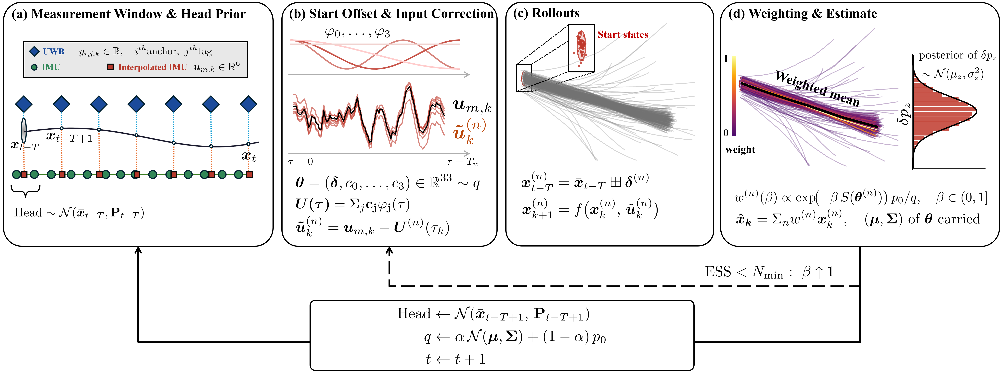
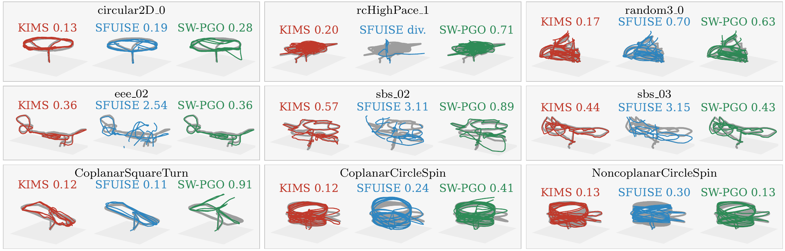
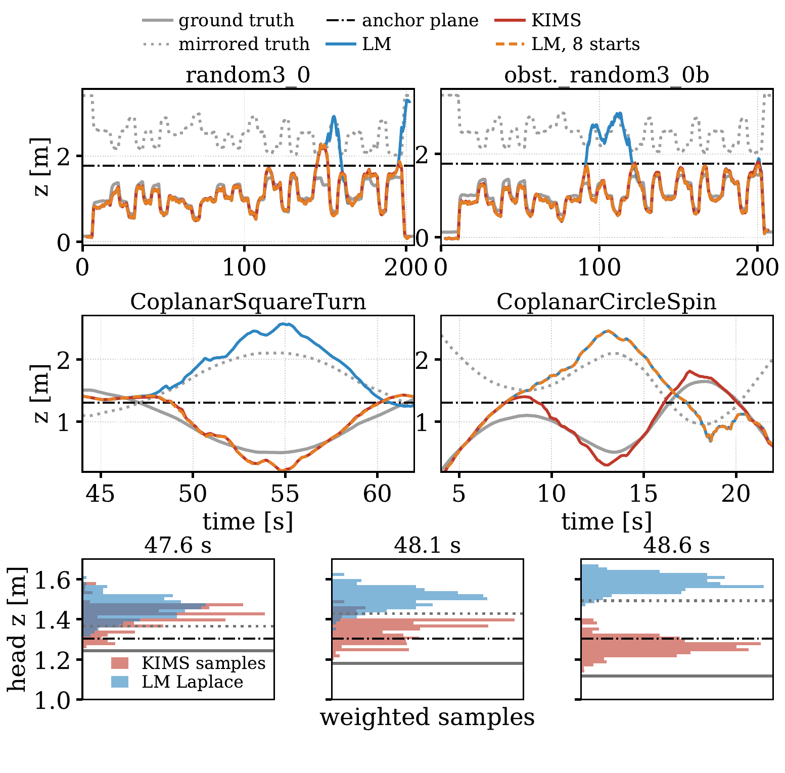
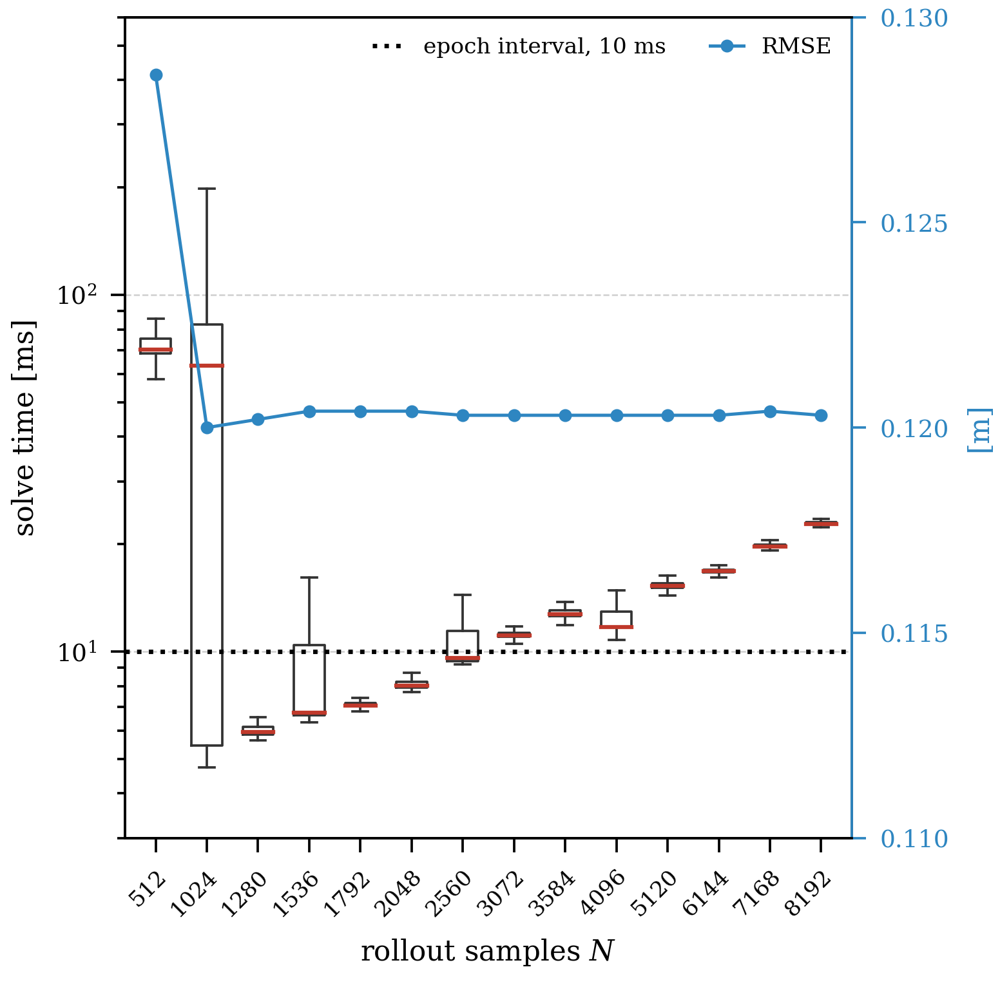

This paper presents KIMS, a kinematics-constrained fixed-lag smoother for 6-DoF pose estimation from ultra-wideband (UWB) ranges and an inertial measurement unit (IMU). UWB ranges contain non-line-of-sight outliers and per-link biases, and anchors mounted at similar heights constrain the height only weakly, so the posterior of a window is non-Gaussian. An estimator that carries a single estimate with its curvature describes it by one local fit. KIMS instead samples a compact window variable, the window-start offset and a smooth correction of the IMU input. Every sample is rolled through the IMU kinematics and weighted by the robust range cost of the whole window, as in model predictive path integral control, and the estimate and the proposal carried to the next window are moments of the window posterior rather than its mode. On 104 real flights from four datasets KIMS never diverges and exceeds 1 m of error on two, near coplanar anchors it is more robust than a gradient-based optimizer of the same objective, and on an embedded GPU its median solve time is below the ranging interval.
CoplanarSquareTurn · 200 of 2,048 window rollouts projected into the arena camera, colored by weight
MILUV random3_0
MILUV rcLowPace_0_v2
UTIL const4-trial1-tdoa2-traj1 · TDoA
NTU VIRAL eee_01
NTU VIRAL eee_02
IULUI NoncoplanarCircleSpin

Samples are drawn from the proposal carried from the previous window and weighted against the window posterior. When the weights collapse, the cost is tempered by \(\beta \in (0,1]\) and raised back to 1 over a few redraws.
| Paper runs, \(N = 2048\) | MILUV | NTU VIRAL | UTIL | IULUI |
|---|---|---|---|---|
| solves that temper | 57 % | 0.1 % | 55 % | 1.5 % |
| mean passes per solve | 9.2 | 1.0 | 7.2 | 1.2 |
| stage limit reached | 2.5 % | 0.02 % | 5.0 % | 0.4 % |
| Gaussian component dropped | 43 % | 0.3 % | 46 % | 1.3 % |
| MILUV | NTU VIRAL | UTIL | IULUI | |
|---|---|---|---|---|
| \(\nu\) [ranges/s] | 70 | 59 | 320 | 800 |
| \(\sigma_{\mathrm{eff}}\) [m] | 0.081 | 0.055 | 0.224 | 0.11 |
| \(\kappa\) | 0.0016 | 0.0077 | 0.18 | 0.0083 |
| lower bound | 2.6 s | 1.7 s | 1.1 s | 1.3 s |
| window used | 3 s | 2 s | 2 s | 2 s |
\(\nu\) is the mean range rate of the flights. \(\sigma_{\mathrm{eff}}\) is the range standard deviation inside the cut of the loss, on MILUV the line-of-sight width of the mixture divided by the square root of its line-of-sight share, \(0.069/\sqrt{0.733}\), on NTU VIRAL the standard deviation the dataset reports with each range, on UTIL the TDoA deviation of the development kit and on IULUI the range deviation of the loss. \(\kappa = (h/r)^2\) at a typical height \(h\) above the anchor plane and anchor distance \(r\), 0.16 m at 4.0 m on MILUV, 2.2 m at 25 m on NTU VIRAL and 0.4 m at 4.4 m on IULUI. UTIL has no common anchor plane, so \(\kappa\) is the mean squared vertical direction cosine along the flights.

KIMS, SFUISE and SW-PGO over the ground truth (gray) on three flights of MILUV, NTU VIRAL and IULUI
| MILUV (13) | NTU VIRAL (9) | UTIL (8) | IULUI (3) | |
|---|---|---|---|---|
| KIMS | 0.135 | 0.435 | 0.130 | 0.120 |
| without tempering | 0.171 | 0.435 | 0.128 | 0.117 |
| without the outlier cut on the ranges | div. | div. | div. | div. |
| Tukey loss instead of the LOS/NLOS mixture | 0.189 | – | – | – |
| one setting for all four datasets | 0.219 | 0.821 | 0.125 | 0.120 |
| newest-epoch output, no delay | 0.212 | 0.456 | 0.135 | 0.152 |
| window | MILUV (13) | NTU VIRAL (9) | UTIL (8) | IULUI (3) | |
|---|---|---|---|---|---|
| KIMS | 2–3 s | 0.135 | 0.435 | 0.130 | 0.120 |
| SFUISE | 10 s | 0.704 | 2.537 | 0.125 | 0.235 |
| SFUISE | 2–3 s | div. | div. | div. | div. |
Single runs, seed 1234, N = 2048. UTIL: two flights per anchor constellation. div.: every flight diverges. IMU alone drifts 0.1–0.5 m in 2 s and 3–16 m in 10 s. Other seeds change the RMSE by at most 2 mm, except on two NTU VIRAL flights.

The same window objective solved by Levenberg–Marquardt is never better than KIMS by more than 1 cm, and worse on 15 of 104 flights. All 15 pass close to the anchor plane, where the posterior splits in two and a mode follows one branch. Inflating the carried covariance four times changes nothing. Restarting LM from eight points frees it on three of the four flights shown but not on CoplanarCircleSpin, where the mirrored branch holds the lower window objective from every start, while the weighted mean of KIMS follows the mass of the branches.

Onboard Jetson Orin NX: 8.0 ms median at N = 2048, the paper setting, inside the 10 ms epoch of IULUI.
| Flight | Anchors | Motion | Plane crossings |
|---|---|---|---|
| CoplanarSquareTurn | 4 at 1.30 m | square with turns | 6 |
| CoplanarCircleSpin | 4 at 1.30 m | 2 m/s circle, yaw spin | 14 |
| NoncoplanarCircleSpin | 0.24, 1.06, 1.42, 2.20 m | same circle and spin | – |
2 UWB tags · 800 ranges/s · IMU 50 Hz · Qualisys ground truth 70 Hz · CSV + JSON + ROS bags
# build (CUDA GPU, no ROS) cmake -S . -B build -DKIMS_NO_ROS=ON && cmake --build build -j8 # one flight, score, plot python3 scripts/run.py kims iului SquareTurn python3 scripts/evaluate.py python3 scripts/plot.py iului SquareTurn # all 104 flights (or: docker/build.sh && docker/run.sh) scripts/reproduce.sh # online, ROS Noetic: catkin_make, then a shipped bag in real time roslaunch kims kims_online.launch seq:=SquareTurn rviz:=true
README for the data, the baselines and every option
IEEE Robotics and Automation Letters, under review. The citation follows once the paper is public.